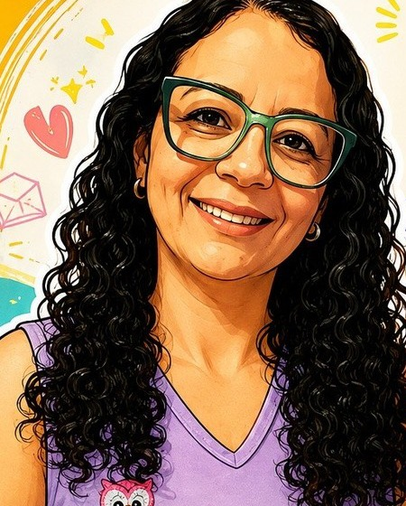

😣
Notas caindo
O boletim chega e você não entende onde ele se perdeu. A professora da escola tem 30 alunos e não consegue parar para explicar de novo.
Aprender é crescer com confiança!
Reforço escolar e acompanhamento pedagógico para crianças do Ensino Fundamental, em grupos de até 5 alunos, com uma professora psicopedagoga que há mais de 30 anos transforma "eu não consigo" em "eu aprendi!".

O boletim chega e você não entende onde ele se perdeu. A professora da escola tem 30 alunos e não consegue parar para explicar de novo.
Toda noite a mesma luta. Você chega cansado do trabalho e ainda precisa ensinar uma matéria que nem lembra mais.
O pior não é a nota: é ver seu filho perdendo a confiança e achando que não é capaz de aprender.
A boa notícia: nenhuma criança é incapaz. Ela só precisa de alguém que olhe para ela de perto, no tempo dela. É exatamente isso que fazemos aqui. 💜
Em sala grande seu filho é mais um. Aqui a professora vê cada dúvida no caderno, na hora em que ela aparece, e não deixa nada passar.
De segunda a sexta. Constância é o que cria hábito de estudo: o conteúdo é revisado enquanto ainda está fresco, e não só na véspera da prova.
Pós-graduada em Psicopedagogia Clínica, a Tia Paula identifica por que a criança trava, seja leitura, atenção ou base, e trabalha a causa, não só o sintoma.
Três décadas ensinando crianças. Ela já viu de tudo e sabe o caminho para destravar cada tipo de dificuldade.
Responsabilidade de verdade: você sabe como seu filho está evoluindo e recebe orientação de como apoiar em casa.
Um cantinho tranquilo, perto de casa, onde a criança se sente segura para errar, perguntar e tentar de novo, que é como se aprende.
O acompanhamento começa pelas tarefas da escola, para seu filho chegar em sala com tudo feito e entendido, e segue reforçando a base que sustenta todas as outras disciplinas: ler bem, escrever bem e raciocinar bem.
Com método personalizado, cada criança avança no seu ritmo e desenvolve autonomia para estudar sozinha.
Do primeiro "oi" até a primeira conquista do seu filho.
Conte a série do seu filho e o que mais preocupa você hoje.
A Tia Paula entende as dificuldades e indica o melhor horário e grupo.
Segunda a sexta, 1 hora por dia, em grupo pequeno e com atenção individual.
Mais confiança, mais aprendizado, mais conquistas, e um dever de casa sem briga.
Para as crianças, simplesmente Tia Paula. São mais de 30 anos dedicados a uma missão: fazer cada criança descobrir que é capaz de aprender.
"Aqui cada criança importa. Porque educação é amor em forma de cuidado." 💜
[Depoimento real de um pai/mãe sobre a evolução nas notas ou na leitura.]
[Depoimento real sobre o dever de casa ter deixado de ser uma briga.]
[Depoimento real sobre carinho, confiança e autoestima da criança.]
Como cada grupo tem no máximo 5 crianças, as vagas por horário são poucas e costumam acabar antes do início das aulas. Reserve agora e aproveite o valor promocional.
Atendemos crianças do Ensino Fundamental, com apoio nas tarefas da escola e reforço nas principais disciplinas: leitura, escrita, interpretação de texto, produção de textos e matemática.
No máximo 5 crianças por horário. Assim a professora acompanha cada aluno de perto, com atenção individualizada, quase como uma aula particular.
As aulas acontecem de segunda a sexta-feira, com 1 hora de duração por dia. A rotina diária cria o hábito de estudo e garante que nenhuma dúvida se acumule.
O valor é acessível e há condição promocional para quem garantir a vaga para 2027. Chame no WhatsApp (21) 99714-3412 para saber os valores.
Sim. A Tia Paula é pós-graduada em Psicopedagogia Clínica e tem um olhar sensível para cada criança. Ela identifica onde está a dificuldade e adapta o método para o seu filho avançar com confiança.
Na Rua Doutor March, 286 – Casa 03, Barreto, Niterói/RJ. Fácil acesso para famílias do Barreto, Santa Rosa, Fonseca, Engenhoca e região.